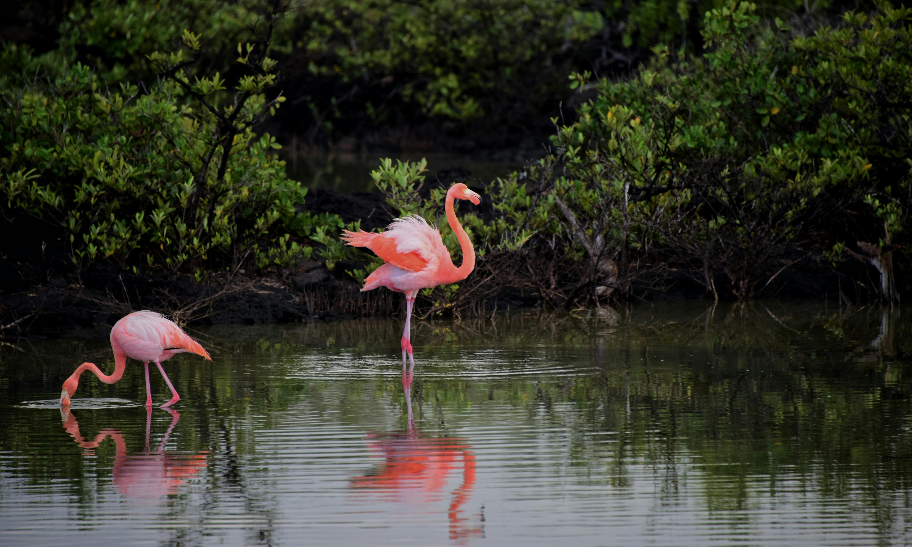

Tropiikin tunnelmia Karibian saarilla
Tästä pääset second-sivulle
Viidakossa lauloivat värikkäät linnut
Matkakohteina: Barbados, Tobago, Martinique ja Antiqua.
Vesiputousten alla oli virkistävää käydä uimassa.
Cataranan putous oli upea vaikka sen alla oli liukkaita kiviä.
Karibian mausteet
Suosituimmat mausteet ovat kaneli, inkivääri...
